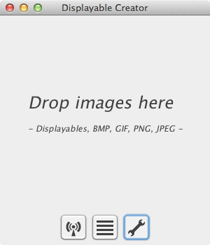

The aim of the displayable creator is to create displayable and to open Displayables. A displayable is created from a usually big image.
Once the displayable Creator is launched, just drop images on the main window to create Displayables, or drop Displayables to view them.

The main window give access to all the functionality of the app.
Sharing port: the network port on your machine from which the Displayable Creator will serve the displayable to your Displayator-running iOS devices. This port need to be open in your firewall.
Activate on startup: when ticked, the displayable creator will start the network sharing functionality when launching.
Tile Size: A displayable stores a copy of the original image cut in tiles that can be quickly accessed. This allow you to choose the tile size. Bigger tiles means less tiles to store, which means a smaller displayable. However, bigger tiles take more time to load on the iOS device. Tooltips indicate suggested usage for each tile size.

This list contains the images queued for transformation into displayable, and the displayables ready for sharing over the local network. Sharing is enabled/disabled on the main screen.

The Edit/Save dialog allows you to change the title of the displayable, its filename, and you can add a description.